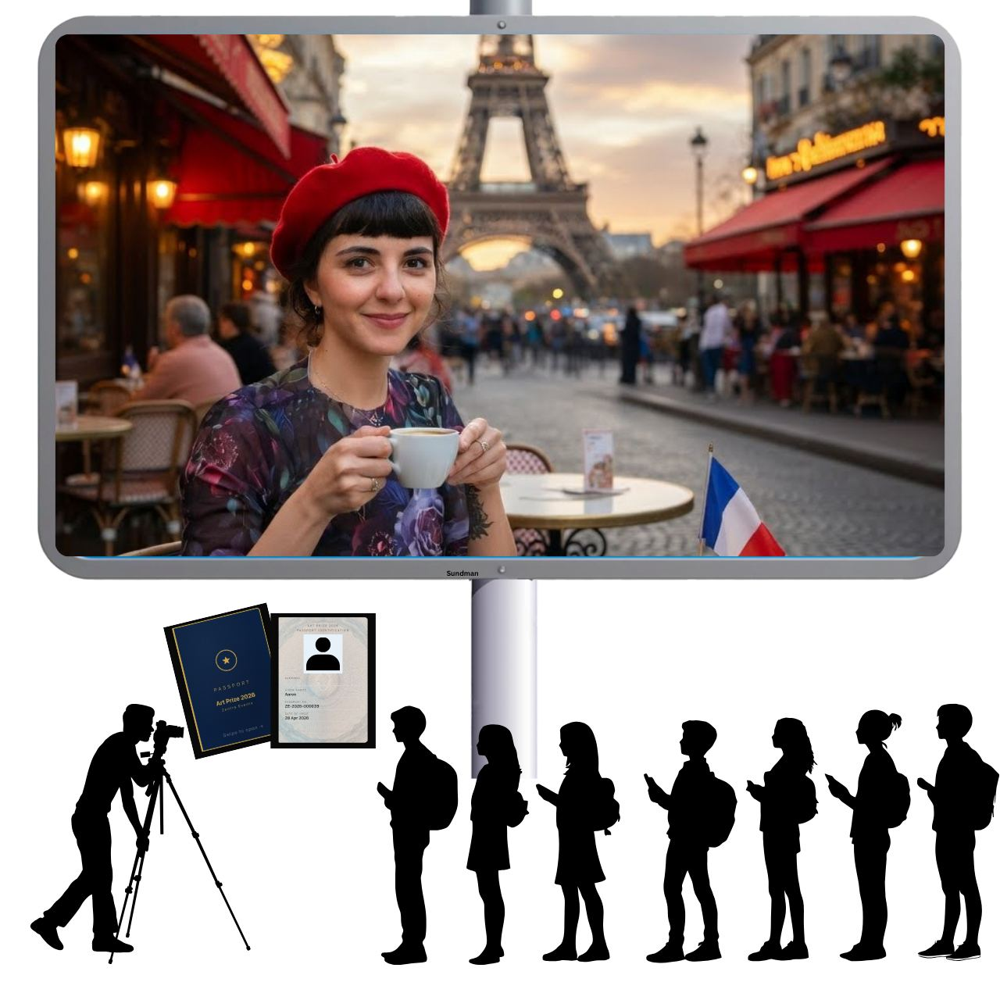

We built an exhibit
about what's fake.
It ends at your café.
Tyler, this is the short version of what we talked about, so our meeting can start somewhere past the explaining.
Two questions at the end, both yes or no, and three small things I will need from you if the answers are yes. Everything here is a draft you get to change.
This is the wall they read on the way out.
Visitors spend twenty minutes inside a fake tour of the world, collecting AI passport stamps from country stations we built for Japan, France, Kenya, and six more. Then they reach this panel, and Has Heart is the first name on it.
Global Citizen.
You are standing in a gallery in Grand Rapids holding pretend photographs of yourself on a fake tour of the world, shot through the lens of corporations that want to sell you something.
Look up from your phone. Look at the other people in the room.
Within a few blocks of where you are standing there are six doors. Behind them are Grand Rapidians who signed their own leases, hired your neighbors, and turned the lights on this morning. Those rooms are real and you can walk to all of them from here.
The brands in those commercials paid for thirty seconds of your attention. The people behind these six doors pay rent on these streets.
- Has Heart Café22 Sheldon Ave NE
- Morning Ritual Coffee Bar150 Ottawa Ave NW
- Sugar Bar132 Monroe Center
- Littlebird95 Monroe Center
- Garden District55 Monroe Center
- San Chez Bistro38 Fulton St W
Hold your phone to the Local Citizen Station at each one to collect your stamp. No purchase required. Buy something anyway.
Kait on our team is still working the exact wording. You see it before it goes to print.
Has Heart is the answer to the question the exhibit asks.
The installation spends twenty minutes showing people a version of the world assembled by brands that needed something from them. A cherry blossom festival selling cars. The Eiffel Tower selling cosmetics.
Then it points at six rooms where the opposite is true. You sell coffee that funds veterans telling their own stories, in a café built by a Navy veteran and a designer who wanted the telling to belong to the person it happened to. That is the same argument the exhibit is making, except you have been making it since 2010 and you did it with a lease and a roaster instead of a wall panel.
We want visitors walking out of a fake world and into that one first.


Two questions.
May we feature Has Heart in the exhibit, the way you just saw it?
Your name and address on the gallery wall, on the printed Local Passport, and on the project website. Nothing else, nowhere else, and only for the run of the show.
You approve the wording before anything gets printed. If a line does not sound like Has Heart, we change it.
Would you keep the Has Heart Station on your counter?
A letter-sized poster with your name set in the same type as the country stations inside the exhibit, so anyone who just tapped Japan recognizes it on sight. The tag that carries your stamp is laminated behind the paper. Nothing to plug in, nothing to charge, nothing on your counter that looks like equipment.
A visitor holds their phone to the poster and the Has Heart stamp lands in their passport. We print it, we deliver it, and we collect it at the end of October when KCAD closes the venue.
Heart
No purchase required.
Three practical things, if you say yes.
Not really asks. Things I need from you once, so the whole thing does not embarrass either of us.
Your hours, September 12 through the end of October
Seven weeks is long enough that yours will probably change inside it. If someone walks over from KCAD and finds the door locked, the stamp fails and they blame you, not us. Give me your real hours and I will print them next to your name. Tell me about closures and we route around them.
One person on the floor who knows what the poster is
This is the part that breaks in programs like this. A visitor asks your barista what the poster is for and gets a shrug. I will bring a half page for your staff wall so whoever is working can answer in a sentence.
A logo file, if you want your mark on the wall instead of your name
Optional, and type alone looks intentional. You were founded by a designer, so I assume you have opinions about this. Send whatever vector file you have and we will set it properly.
Seven weeks, and a post we make together.
Foot traffic is the obvious part. The station is live from September 12 through the end of October, and the heaviest stretch is September 17 to October 3, when the ArtPrize crowds move through the venues. It keeps running the four weeks after that while KCAD stays open. Every one of those visitors arrives holding a passport that says the point of the exhibit was to find you.
The part we would rather build with you is the post. We are making one for each of the six, shot at your place, and running it as a collaboration so it lands on your feed and ours at the same time with both handles on it. You approve the image and the caption before anything goes up. If you would rather shoot it yourself, we will run yours.